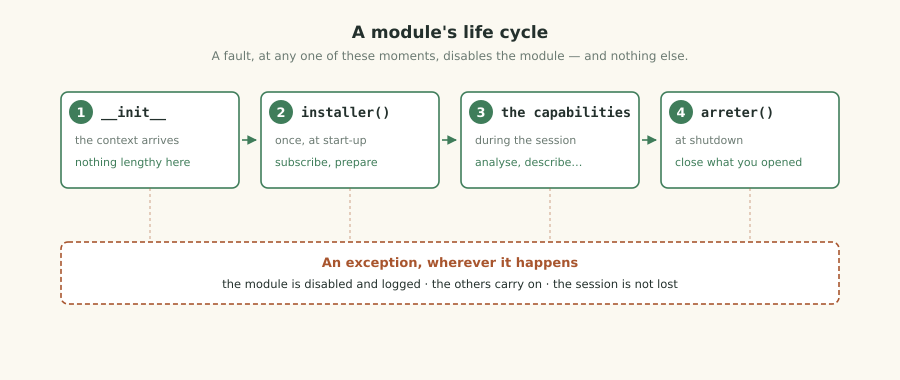

The programming interface, the SDK, and what a module is allowed to do
Programming interface version 2.0
For PhytoScope 1.5 and later
The software, the SDK and this document are published
under the MIT licence.
The example code is yours to copy, with no conditions attached.
This document is addressed to somebody who can program in Python and wants to add something to PhytoScope: an analysis, a representation, a sonification, an export format, a measurement source. It assumes no knowledge of the software's own code — that, indeed, is the whole point of the interface described here.
Read the engine. Understand how acquisition is scheduled. Know what an
EngineState is. A module is handed a narrow, documented
surface, and that is deliberately all it is handed.
The interface carries a version number, in semantic numbering. As long as the major figure does not change, a module written today will go on working: we may add, we may not take away. If the day comes when that promise has to be broken, the major number will change, the software will refuse to load the older modules while saying so clearly, and this document will explain the migration.
We also promise that your module will never bring the software down. A fault, wherever it happens, disables your module and writes it to the log; the session goes on. That is as much for you as for the user: one writes more freely knowing that a slip will not cost somebody eight hours of measurement.
This is not a sandbox. Your module runs in the same process, with the same rights as the software: it can write where it likes and read what it likes. We have neither the means nor the intention of preventing it — Python does not lend itself to that, and a badly made sandbox inspires a confidence it has not earned.
What we do instead is more honest: we say clearly what a module ought to do, we make that path easy, and we isolate faults. A module that writes outside its own directory is not blocked; it is ill-mannered, and that will get about.
Let us do it first and explain afterwards. By the end of this chapter, three rows of your own making will be showing in the software's Multimeter tab.
The SDK ships with the source code, in the
src/sdk/ directory. It holds a tool that creates a complete
module:
python3 src/sdk/tools/new_module.py my-first-moduleThree files appear:
| File | What it holds |
|---|---|
module.py | the skeleton, with an analysis capability that already works |
test_my_first_module.py | tests that pass, and that you extend |
README.md | how to install it, and what is left to do |
The point of this tool is not to type less. It is that the skeleton it produces is already correct: the manifest is valid, the tests pass, and the pitfalls described later on are already avoided. One starts from a module that works, and replaces what one wants.
python3 -m pytest my-first-module/ -vFive tests pass. Notice what they do not require: no running software, no board plugged in, no plant on the desk. The tests build a plausible signal and a fake context, then call your code. That is what makes it possible to develop a module on a train.
It is shipped with the tests, and you will copy it. It implements what your module uses, and nothing else. If a test fails because a method is missing from it, that is a sign you are using a part of the interface which will also have to be tested — which is good news, not a nuisance.
# Linux
cp -r my-first-module ~/.config/phytoscope/modules/
# macOS
cp -r my-first-module ~/Library/Application\ Support/PhytoScope/modules/
# Windows
xcopy /E my-first-module %APPDATA%\PhytoScope\modules\my-first-module\Restart PhytoScope. Your module shows up in two places: in the Multimeter → Scientific quantities tab, where its values appear among those of the shipped modules; and in the Diagnostics → Modules tab, which lists what has been loaded.
Go to Diagnostics. The Modules page says in one sentence what happened. That is the page to look at first, before doubting yourself:
| What it shows | What it means |
|---|---|
incompatible — targets API 2.0 |
your manifest announces an interface version this software does
not know. Correct api=. |
incompatible — library missing |
you declared requires=("scipy",) and scipy is not
installed. The command to type is given on the spot. |
faulted — TypeError while loading |
your code raised. The full traceback is in the log (Ctrl+L). |
disabled |
the user turned it off in the settings. |
| absent from the list | the directory is in the wrong place, or it holds no
module.py file. |
A module is a directory holding a module.py
file, which declares a class inheriting from Module. Everything
else is optional.
from phytoscope.api import Capability, Manifest, Module
class MyModule(Module):
MANIFEST = Manifest(
name="my-module", # a-z, 0-9, hyphens — the identifier
title="My module", # what the user reads
version="1.0.0",
api="3.0", # the interface version aimed at
description="What this module does.",
author="Your name",
licence="MIT",
capabilities=(Capability.ANALYSER,),
)The software parses module.py to extract the manifest,
before importing it. That is what lets it list the modules
present, disable one, and refuse the one that aims at an unknown interface
— without having to run code in order to find out whether the code should
be run.
The practical consequence: write literal values. A
computed value — version=read_version() — will not be read,
and the default will apply. Only the constants of Capability
are an exception, because they belong to the contract.
| Field | Role | Default |
|---|---|---|
name | the technical identifier. It serves as the key everywhere: settings, directory, log. | required |
title | what is displayed | the name |
version | yours, semantic | 0.1.0 |
api | the minimum interface version you need. Accepted on any later minor of the same major. | the current one |
capabilities | what you provide. Declarative: what is not there is not offered, even if the method exists. | none |
depends_on | the modules to load before yours, by their name | none |
requires | the Python libraries needed. Checked before the import. | none |
description, author,
licence, website | displayed in Diagnostics | empty |
api is a minimum, and the host reads it as
one. The question can be asked from either side, through the same parser, so
the two answers cannot drift apart.
# your module, asking what it is running on
context.api_version # "3.0" — the host's API version
context.api_required # "3.0" — what YOUR manifest asked for
context.api_at_least("3.2") # bool — same major, minor at least
# the host, asking what your module needs
manifest.api # "3.0" — the minimum, as you wrote it
manifest.api_required # (3, 0) — the same, parsed
manifest.api_satisfied_by # "API 3.0 or any later 3.x"
registry.api_requirements() # the minimum of every module at onceA module that needs 3.0 to work at all, but would like a field
added in 3.2, declares api="3.0" and asks at run time:
if context.api_at_least("3.2"):
return self._with_the_new_field(x, fs, context)
return self._the_way_that_works_on_3_0(x, fs, context)Declaring 3.2 because that is what its author had
installed makes the module refused on every 3.0 and 3.1 host, to gain one
optional field. The manifest states what you need; the context
tells you what you got.

__init__(context) — you are handed the context.
Do nothing lengthy here: this is called at start-up, for
every module, one after another.setup() — once, after every module has been loaded.
This is where you subscribe and prepare your files.shutdown() — once, at shutdown. Close what you opened; your
subscriptions are removed for you.def default_settings(self):
return {"seuil_uv": 8.0, "show_detail": True}
# later on, inside a capability:
seuil = context.settings.get("seuil_uv", 8.0)The software keeps them under your module's name and hands them back at the next start-up. Never write into the software's own settings file yourself: it is not yours, and its shape may change.
A capability is what your module knows how to do. You declare one, several, or none — a module that acts only at install and at shutdown is perfectly legitimate.
Called by the Multimeter tab, every two seconds, and only while the page is visible. You are handed a window of signal and return numbers.
class MyAnalysis(Module, Analyser):
WINDOW_S = 60.0 # how many seconds you want
RAW_SIGNAL = True # before the notch and the low-pass
def analyse(self, x, fs, context):
return [Quantity(
key="my-indicator",
label="My indicator",
value=float(np.std(x)),
text=f"{np.std(x) * 1e6:.2f} µV",
meaning="What this number says, and what it does not say.",
)]RAW_SIGNAL = True gives the signal before the
mains notch and the low-pass. That is what any noise measurement needs:
filtering before measuring noise amounts to measuring your own
filter. The notch would erase the mains residue that is precisely
what one wants to see, and the 40 Hz low-pass would erase the band in
which thermal noise is read.
False gives the processed signal, the one seen on screen.
That is what is needed for analysing activity rather than the
measurement chain.
Called at the user's request, in the Descriptors tab. This is not a critical path: a second of computation is acceptable.
def describe(self, x, fs, context):
t = np.arange(x.size) / fs
return [Trace(
x=t, y=x * 1e6,
title="My representation",
x_label="time (s)", y_label="µV",
warning="What this representation assumes.",
)]Called for every event detected. Be quick: you are inside the musical rendering loop. Returning an empty list means "no note for this value", which is a legitimate answer.
def sonify(self, value_v, context):
gamme = (0, 2, 4, 5, 7, 9, 11) # diatonic
rang = int(abs(value_v) * 1e6) % len(gamme)
return [ProposedNote(midi_pitch=60 + gamme[rang],
velocity=70, duration_s=0.4,
source_v=value_v)]The source_v field is not decorative: it keeps the measured
value that produced the note. A sonification from which one can no longer
get back to the measurement is no longer a measurement.
FORMAT = "My format" # what appears in the list
EXTENSION = ".xyz"
def export(self, session, target, context):
# `session` is the session's directory — READ from it, do not write to it.
# `target` is the file to produce — the only place to write.
return TrueThe most delicate one: it runs on the data path. The software isolates you as far as it can, but it cannot isolate you from the time you take. A slow source drops samples, and that cannot be made up for.
LABEL = "My board"
def open(self, context): ... # returns true once it is open
def read(self): ... # a block in volts, or None
def close(self): ...| Capability | Called | Time constraint |
|---|---|---|
| Analyser | every 2 s, page visible | a few tens of ms |
| Descriptor | on demand | a second will do |
| Sonifier | on every event | very short |
| Exporter | on demand | none |
| Source | continuously | critical |
As of PhytoScope 1.5, the host asks the registry for two capabilities
only: providers(Capability.ANALYSER), in
ui/tabs.py, and providers(Capability.DESCRIPTOR),
in ui/features_tab.py. The contract declares all five, the
registry records all five, and a manifest announcing any of them is
accepted — but a sonifier, an exporter or a source will load, show as
active in Diagnostics, and never be called. The shipped
export-csv module is in exactly that position.
We would rather say so than let you spend an evening looking for the mistake in your own code. Write against the first two today; a module written against the other three will start working the day the host asks for it, without changing.
A module does not poll the software in a loop: it says what interests it, and the host calls it. That is the only way to have modules that cost nothing when nothing is happening.
from phytoscope.api import EVENT_DETECTED
def setup(self):
self.context.subscribe(EVENT_DETECTED, self._sur_evenement)
def _sur_evenement(self, instant_s, amplitude_v):
self._compte += 1| Constant | The callback receives |
|---|---|
MEASUREMENT_STARTED | (state) |
MEASUREMENT_STOPPED | (state) |
SOURCE_CHANGED | (name) |
EVENT_DETECTED | (instant_s, amplitude_v) |
NOTE_PLAYED | (midi_pitch, velocity) |
UTTERANCE_PRODUCED | (text) |
SESSION_STARTED | (directory) |
SESSION_ENDED | (directory) |
SAMPLE_CAPTURED | (path) |
SETTINGS_CHANGED | nothing |
DISK_ALERT | (megaoctets_restants) |
Never from the acquisition thread. A module that takes thirty milliseconds to answer slows the display down; it does not drop a sample.
That is not permission to be slow. Thirty milliseconds at every event, on an active plant, shows on screen.
A callback that raises is unsubscribed on the spot, and the incident written to the log with the module's name. That is deliberate: leaving a faulty subscriber connected would mean writing the same traceback every second, and making the log unreadable — the very log one needs in order to understand the fault.
If your module "stops reacting" after a few minutes, look at the log: you will find the fault there, and the time at which it was disconnected.
That is not an error: the callback will simply never be called. It is intended. A later version can publish new events without older modules having to change, and a module can take advantage of a recent event while remaining loadable on an older version.
What costs you an evening when you do not know about it. Every one of these is real: each was met while writing the modules shipped with the software.
# NO — will not be read, and the default will apply
MANIFEST = Manifest(name="my-module", version=read_my_version())
# NO — the same, even with a constant of the module
VERSION = "1.0.0"
MANIFEST = Manifest(name="my-module", version=VERSION)
# YES
MANIFEST = Manifest(name="my-module", version="1.0.0")The software parses your file to extract the manifest, before importing it. Running a module in order to find out whether it should be run would be absurd.
# NO — disables your module for the whole session
if x.size == 0:
raise ValueError("no signal")
# YES
if x.size == 0:
return []# NO — this sentence cannot go into any translation catalogue
Quantity(label=f"Allan deviation at {tau} s", ...)
# YES
Quantity(label="Allan deviation at {tau} s", params={"tau": f"{tau:g}"}, ...)The interface translates first and fills in afterwards. A label with the number already embedded will stay in English in all the other languages.
text="+37.2 dB" # YES — symbols are international
text="+37.2 dB above the floor" # NO — will stay in English everywhereThis pitfall is all the easier to fall into because it is invisible from an English interface.
The processed signal has been through the mains notch and the 40 Hz
low-pass. Measuring noise on it amounts to measuring your own
filter. Use RAW_SIGNAL = True.
path = os.path.join(self.context.directory(), "my-file.txt")Nothing stops you technically. But a module that litters the sessions directory will be uninstalled, and rightly so.
# NO — will break without notice, and we shall not even know
from phytoscope.core.engine import Engine
# YES
from phytoscope.api import Analyser, Quantity, Manifest, ModuleThe engine changes with every version. phytoscope.api does
not change as long as the major does not. If something you need is missing
from the interface, say so: that is how it will grow.
| The pitfall | The symptom | The rule |
|---|---|---|
| a computed manifest | the defaults apply | use literals |
| raising for "nothing" | module disabled | return [] |
a lengthy __init__ | slow start-up | setup() |
| a label that is not a template | untranslatable | {param} + params |
words in text | English everywhere | symbols only |
| the processed signal for noise | you measure your filter | RAW_SIGNAL |
| writing elsewhere | module uninstalled | context.directory() |
| a lengthy callback | a jerky display | note it down, compute elsewhere |
| importing outside the API | breaks on update | phytoscope.api |
no meaning | the interface tells on you | always write it |
Every name in the interface changed on 2026-09-23: the
surface was French, and the repository turned to technical US English.
API_VERSION went from "2.0" to "3.0"
in the same change, which is exactly what a major number is for.
The host reads the manifest without importing the module, sees
api="2.0", and refuses it at discovery, with one
sentence in Diagnostics:
incompatible — targets API 2.0, but this software offers 3.0Nothing is aliased, deliberately. An alias would let the module load and then fail on the first field it read, halfway through a session — which is the failure a major bump exists to prevent. A refusal you can read at start-up is worth more than a module that works until it does not.
api="3.0" in the manifest.src/sdk/hello-world/test_hello_world.py — shorter than
patching the old one.There is no step four. The interface does the same things it did, under names somebody who does not read French can follow.
| 2.0 | 3.0 |
|---|---|
VERSION_API | API_VERSION |
Manifeste · MANIFESTE |
Manifest · MANIFEST |
Capacite.ANALYSEUR … |
Capability.ANALYSER … |
nom · titre · auteur ·
site |
name · title · author ·
website |
capacites · depend_de ·
exige |
capabilities · depends_on ·
requires |
installer() · arreter() |
setup() · shutdown() |
reglages_par_defaut() · self.contexte |
default_settings() · self.context |
analyser() · decrire() ·
sonifier() · exporter() |
analyse() · describe() ·
sonify() · export() |
FENETRE_S · SIGNAL_BRUT ·
LIBELLE |
WINDOW_S · RAW_SIGNAL ·
LABEL |
Grandeur: cle, libelle,
valeur, texte, sens,
alerte |
Quantity: key, label,
value, text, meaning,
alert |
NoteProposee: hauteur_midi,
velocite, duree_s, origine_v |
ProposedNote: midi_pitch,
velocity, duration_s,
source_v |
Contexte · EtatMesure |
Context · MeasurementState |
contexte.dossier() · .reglages ·
.journal() · .traduire() ·
.abonner() |
context.directory() · .settings ·
.log() · .translate() ·
.subscribe() |
"actif" · "en_faute" ·
"desactive" |
"active" · "faulted" ·
"disabled" |
The complete table, field by field, is in
src/sdk/docs/08-migrating-from-2.0.md.
Renaming was the occasion, not the whole of it. Three members on each
side are new, so that the version contract can be read rather than
guessed: context.api_version,
context.api_required and
context.api_at_least(v) for the module;
manifest.api_required,
manifest.api_satisfied_by and
registry.api_requirements() for the host; and
parse_version() for both, so that neither writes its own
regular expression.
Manifest.api had always been a minimum — that is
what compatible() computed — but nothing said so, and nothing
handed it back parsed. The refusal now names both versions and what would
satisfy the module:
needs at least API 2.0, but this software offers 3.0 — it wants API 2.0 or any later 2.xmeasurement.started,
signal.event and the nine others. They were renamed in 2.0,
and renaming them twice would have been its own kind of cruelty;mesures.csv,
evenements.csv, seance.json. An exporter reads
the names it always did;They go through the same interface as yours — no privilege, no shortcut. That is what guarantees the interface really is enough, and it has an agreeable consequence: to learn how to write a module, it is enough to read one.
| Module | What it shows |
|---|---|
scientific-quantities |
an analyser that computes a great deal, and explains every number |
advanced-descriptors |
six representations, with their warnings |
rig-fingerprint |
a module that keeps state on the disk |
export-csv |
the shortest complete example — sixty lines |
They live in src/phytoscope/phytoscope/modules/.
In src/sdk/, with the source code:
docs/ — this documentation, in eight parts, in Markdown;hello-world/ — a complete example with its tests;tools/new_module.py — creates a module that already
works.Say so. The interface was written by trying to anticipate, and anticipation is always a little wrong. A capability that is missing, an event nobody foresaw, a piece of data you are not given: those are the requests that move an interface forward, and they are more useful than compliments.
We shall not, however, grow it one request at a time. A capability added is a capability to be honoured for ten years; we would rather wait for the same request to come from three directions than add it the first time and have to carry it afterwards.
A sandbox. Python does not lend itself to it, and a badly made sandbox inspires a confidence it has not earned. We would rather say clearly what a module ought to do, make that path easy, and isolate faults.
Hot reloading. Reloading a module whose objects are already referenced elsewhere leaves two versions in memory and produces bugs nobody can read. A restart costs three seconds.
Bretagne Namasté — Thierry GAYET
contact@bretagne-namaste.com ·
Thierry.Gayet@gmail.com
bretagne-namaste.com
The software, the SDK and this document are published under the MIT licence. The example code is yours to copy, with no conditions attached.